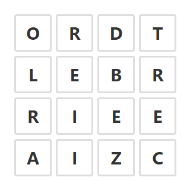
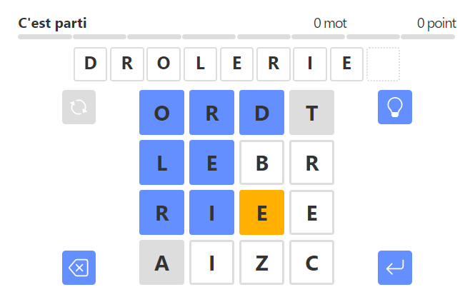

TheBOG is a daily word game inspired by Boggle that's played on a grid of 16 letters arranged on a 4 by 4 board.

For now, TheBOG is a weekly game, with a new game every Wednesday.
The goal of TheBOG is to find as many words as possible by connecting adjacent cells on the board, either horizontally, vertically, or diagonally.
At the beginning of the game, 16 letters are placed on the game grid. These letters are the same for all players and make up the daily grid. You have a full day to participate in this game. The letter are updated at midnight UTC, which corresponds to 1 am (winter time) or 2 am (summer time) in France.
Using these 16 letters, you can start searching for words that are present on the grid, similar to Boggle. To do this, you must form words by connecting adjacent letters. Cells can be connected if they "touch" either horizontally (left or right), vertically (above or below), or even diagonally. It's important to note that a cell cannot be used more than once in the same word.
For a word to be valid, it must meet certain conditions:
TheBOG only accepts words from the Common English Lexicon (CEL). Verbs and conjugations are allowed, but proper nouns are not accepted. To make things more challenging, each daily TheBOG game includes at least one word with 8 or 9 letters!

TheBOG automatically keeps track of the number of words found and calculates their scores. Finding a 4-letter word is worth 1 point. Words with more than 4 letters earn 1 point per letter:
The score, not the number of words, determines the level achieved in the game. The objective in TheBOG is to reach the "Genius" level, which requires scoring around 60% of the total possible points.
Typically, the "Genius" level is attainable with a good "everyday" vocabulary, without the need for rare words.
Theoretically, the difficulty of each daily game progresses throughout the week, starting from easiest to most difficult:
The week concludes with another moderately challenging game on Sunday.
I hope this documentation has helped you understand the basic rules for playing TheBOG. So... good luck and have fun!
Michel (2023/05/29)